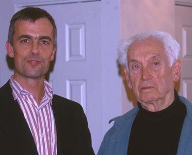

|  | Ernst
Mayr
Evolutionary Biologist Harvard University
|
Dr. Mayr, who is 97, takes long hikes in the woods behind the housing development every day; he is still producing professional papers and books with respectable sales, including his latest and 16th, "What Evolution Is" (Basic Books), which was published in October.Over a cup of tea in his two-room apartment, Dr. Mayr speaks energetically, his voice still accented from his native Germany. "I wrote this book," he said, "because there wasn't a history of the ideas of biology I liked. Most are basically an uninteresting collection of facts that don't hang together." He added "I am holistic in my thinking."
...
Dreifus: "In 'What Evolution Is,' you describe Charles Darwin as a 'superb observer' with an 'insatiable curiosity.' Does that description apply to Ernst Mayr, too?"
Mayr: " That is Ernst Mayr, too. I was born that way. As I go through the woods, I always see all sorts of interesting things. I am amazed that others can't see these things. Everything arouses my curiosity. As a young man in Germany, I had thought of becoming an artist or something like that. And then when I was a naturalist, I was mostly interested in birds, but I also knew every flower in the local district. In New Guinea, I was supposed to collect birds. But once my native hunters were properly trained, I would go out and collect orchids and other things."
"So my interests have always been very, very broad. And I think Darwin was like this. He was one of those people, too, who could see things."
...
Mayr: "Now one of my colleagues at ... the University of California ... made the whole class fill out a questionnaire. 'Do you believe in God? Do you read the Bible? Do you believe every word in it, literally?' He then collected these answers, and he gave the course and showed how strong the evidence for evolution was. At the end of the course, took out the blanks of his old questionnaire and let the students fill it out again. Hardly anybody had changed! I don't think college courses in evolution will change the minds of very many creationists."
Dreifus: "Do you think students' staying dogmatic about evolution after taking a course on it is a symptom of poor teaching?"
Mayr: "You could say that. However, the evidence for evolution is so strong that even the poorest teacher cannot destroy it."